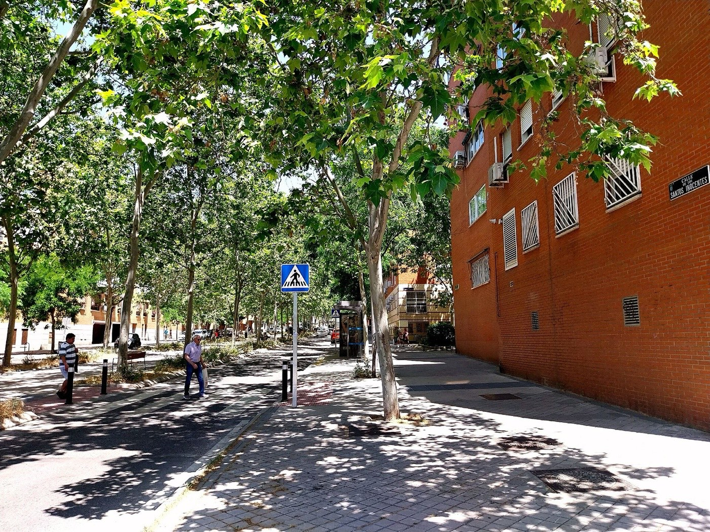
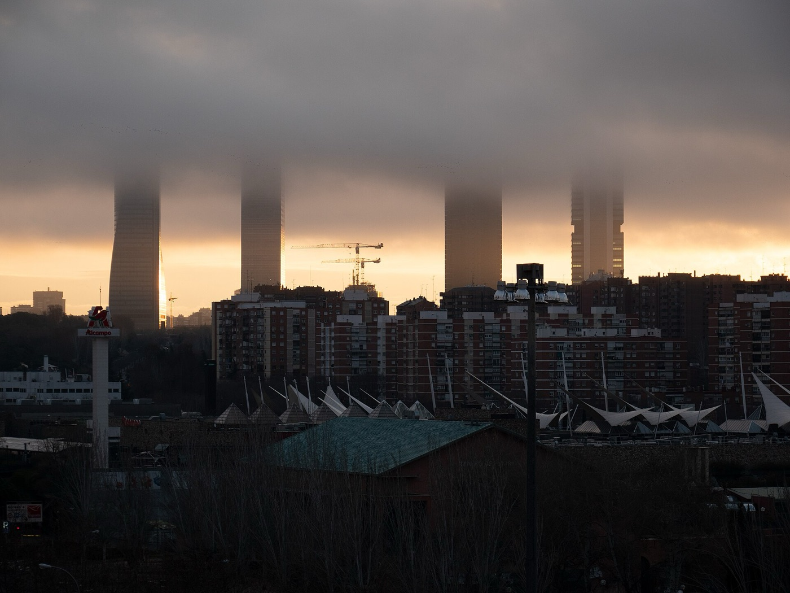

The Spanish deck stops at twelve
Forty cards. One to seven, then the sota, the caballo and the rey: knave, knight and king. Centuries of printing and not one queen. So we added card thirteen, twice.



Sofia Navarro
Reina de Bastos. Co-founder and Chief Creative Officer.
Sofia grew up in Puente de Vallecas, in a two-room flat above a fruit shop, with her mother, her grandmother and two brothers. Nobody in the family had been to university, and nobody had time to wonder what she would become.
At fourteen she painted the price boards for the shop downstairs. At sixteen she made the flyers for the neighbourhood parties, then the covers for the rappers who played them, then their videos, shot on a borrowed phone. Every job paid for the next one. No school taught her any of it.
She still makes everything as if the budget could vanish tomorrow, which is why her work never looks like the budget. Bastos is the suit of wood: the club, the tool, and the hands that use them.
Isabel Romero
Reina de Espadas. Co-founder and Chief Strategy Officer.
Isabel is the one who asks the question nobody in the room wants asked. She studied economics in Madrid and spent ten years in the towers, building brand strategy for global companies at network agencies and a consultancy.
She learned how big companies decide, and how often they decide to do nothing. She left with one rule: if it doesn’t fit on a single card, it isn’t a strategy yet. Every brief at Chicks with Decks still starts on one, and no word stays on it that hasn’t earned its place.
Espadas is the suit of swords: the cut, the decision, and the sharp mind behind both.

Two queens, one table
They met on a shoot in 2023. Isabel had written the strategy; Sofia had been hired to make the film. On the second day Sofia rewrote the script on the back of a call sheet. Isabel, who had never let anyone touch a strategy of hers, read it twice and said it was better.
A year later they founded Chicks with Decks in Madrid: one agency where the people who think and the people who make sit at the same table, and where women run it. Not as a quota. As the house rule.
Thirteen is bad luck
In Spain, martes y trece, Tuesday the thirteenth, is the day nothing should start. We started anyway. Luck depends on who’s holding the card.